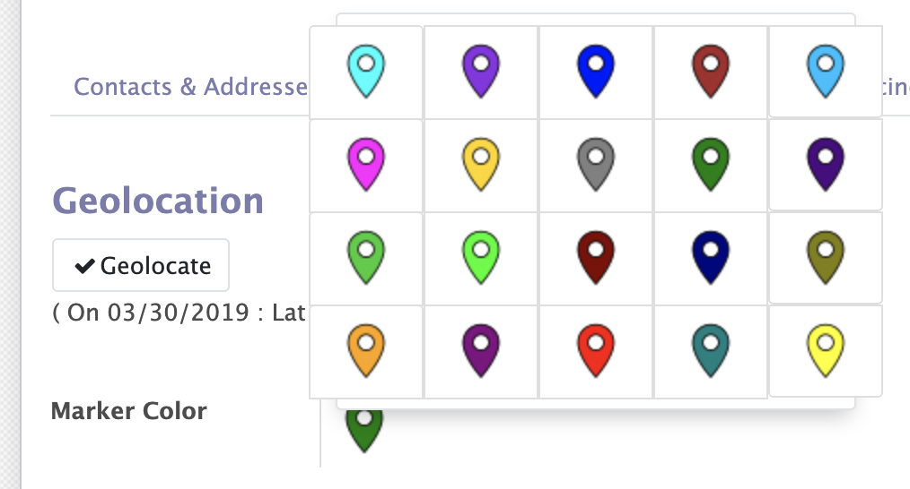

<section class="oe_container">
    <div class="oe_row oe_spaced">
        <h4 class="oe_slogan">New Widget `google_marker_picker` Google Marker Picker</h4>
        <div class="oe_span12">
            
        </div>
        <div class="oe_span12 oe_mb32">
            <p>New widget `google_marker_picker` allows user to set marker's color from any field</p>
            <p>To apply the selected marker on map, you can tell the map view to load the marker by adding attribute color='[field_name]'</p>
            <br/>
            <p><a href="https://icons8.com/icon/59830/marker">Marker icon by Icons8</a></p>
        </div>
    </div>
</section>
